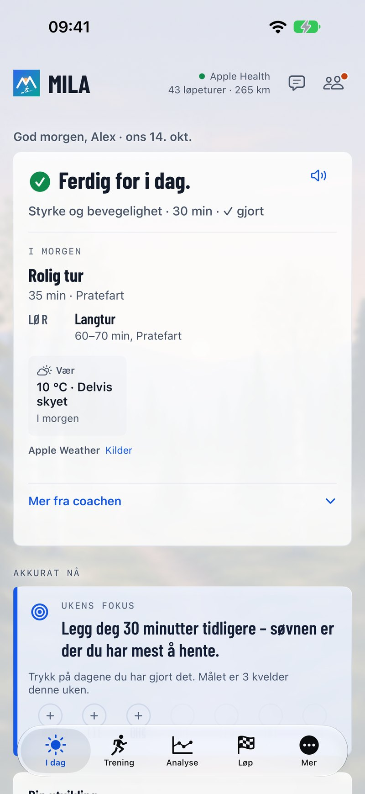
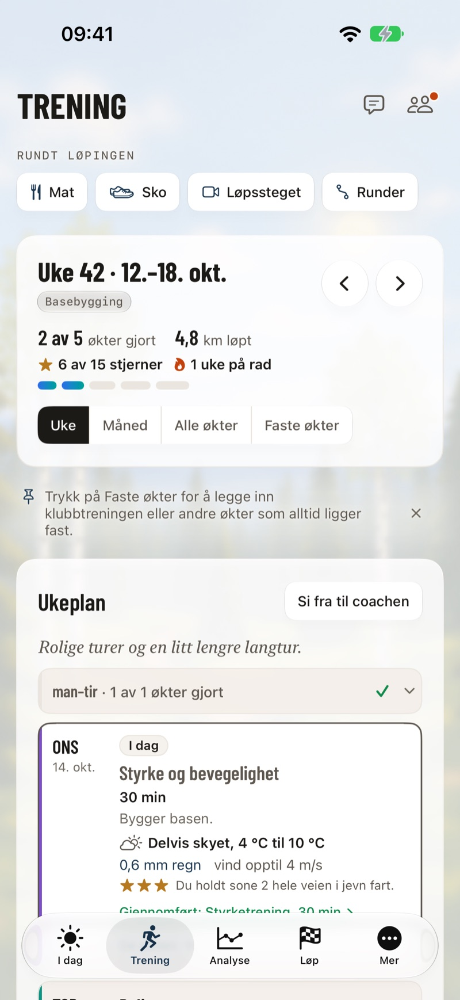
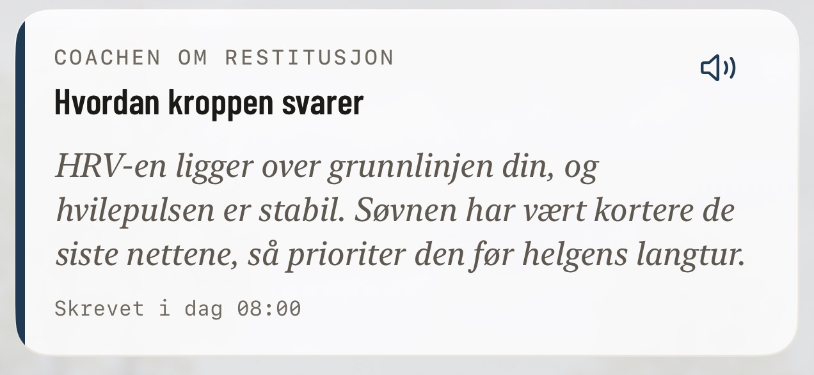

Rett økt. Rett dag.
En coach som leser kroppen din og livet ditt hver morgen – helt til mål.
Mila tar utgangspunkt i dine egne data, formen din i dag og målet ditt. Hver morgen kommer coachens beskjed først – klar, normal dag eller ta det rolig – og så dagens økt slik den ser ut nå: trening som passer livet ditt, gjør deg sterkere mot målet og aldri ber deg tyde et eneste diagram.


Mer ut av treningen, mindre å gruble på
Rett økt hver dag – etter hvordan du har det og hvordan hverdagen ser ut.
Derfor er Mila annerledes
Klokken din måler. Mila gjør det om til rett økt for deg.
Mila-følelsen
Rett økt. Rett dag. Alt i Mila tar utgangspunkt i det.

Du i midten. Coachen ser helheten.
Hver morgen sier coachen hva som passer i dag. Økter, mat, sko, søvn og hverdag henger sammen – og alt tar utgangspunkt i deg.
- Økterdagens økt
- Løphelt til mål
- Kroppenpuls og følelse
- Søvn og hvilehvile teller
- Matdrivstoff og restitusjon
- Skoslitasje, neste par
- Klæretter været
- Hverdagenjobb og reiser
En coach ett trykk unna
Hver morgen får du coachens beskjed og dagens økt, beste tid å løpe og hva du bør ha på deg i været. Notatet kan du få lest opp. Endrer livet seg, si fra til coachen med egne ord, og lurer du på noe, spør coachen – svarene kjenner dataene dine. Når uken er omme – søndag kveld eller senest mandag morgen – kommer ukesoppsummeringen og planen for neste uke.

Mila på håndleddet
Milas app på Apple Watch viser dagen din, tar opp løpet ditt og spør hvordan økten gikk. Andre klokker fungerer via Apple Health.
Alt en løper trenger
Fra den første rolige turen til løpsdagen.
Ukeplan og analyse
En ukeplan med styrkeprogram og økter du kan flytte. Etter økten plan mot gjennomført, ruten farget etter tempo og lignende økter. Dine mønstre, Sammenlignet med, Rekorder over tid og Mine mil.
Milas løpsregister
Offisielle løp med kart, høydeprofil, drikkestasjoner og lenke til arrangøren – eller last opp løypa selv (GPX, KML, TCX eller ZIP). Hvert løp i registeret har også sin egen side: milacoach.app/nb/lop.
Før og etter løpet
Prognose, tempoplan etter høydeprofilen, energiplan, Er jeg klar?, løpsguide og løpsmorgen. Etterpå kilometertider mot planen, coachens løpsanalyse og det offisielle resultatet ditt.
Løpssteget
Film i appen eller velg en video. Bare stillbilder sendes, med ansiktene gjort uskarpe, og videoen forlater aldri iPhone. Coachen gir observasjoner og øvelser, bygger dem inn i planen og følger dem opp over tid.
Sko
Coachen anslår hvor lenge hver sko holder for deg – omtrent hvor mange kilometer og uker i ditt tempo. Les inn skologgen din fra et bilde eller en CSV-fil.
Mat
Ta bilde av eller beskriv et måltid, så anslår coachen det og kobler det til treningen. Rett det med egne ord, vis det uten tall eller loggfør med Siri.
Del
Bilder av økter og løp med en bakgrunn i Mila-stil fra stedet, et tekstforslag og en linje fra coachen.
I kalenderen
Coachens økter i kalenderen du velger, til tiden da været er best.
I gang på noen minutter
Fortell coachen om deg selv og målet ditt, se hvordan coachen har forstått deg, og få din første uke. Prøv Mila Coach gratis i en uke.
Fungerer med klokken din
Mila leser øktene dine fra Apple Health, så du trenger ingen bestemt klokke.
Dataene dine forblir dine
Data fra Apple Health leses på iPhone; et sammendrag går til coachen etter at du har samtykket, sammen med det du kobler til eller sender (en tilkoblet klokketjeneste, måltidsbilder, bilder av skologgen, stillbilder fra videoer av løpssteget). Kontoen din lagres i EU (Irland). Coachens tekster skrives av en ekstern KI-tjeneste i USA etter EUs standardkontraktsbestemmelser. Mila selger aldri dataene dine og bruker dem aldri til reklame, og du kan når som helst slette kontoen din med alt i den. Mila gir generelle treningsråd, ikke medisinske råd.
Rett økt. Rett dag.